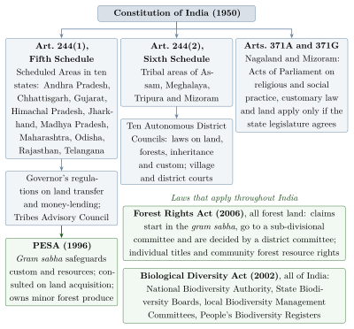

Chapter 11: Tribal Governance: Councils, Customary Law and Self-Rule¶
11.1 Introduction: Governance as Knowledge¶
Adivasi communities have their own institutions for settling disputes, allocating land and forest, organising festivals and rituals, and dealing with outsiders. These institutions embody accumulated experience about how to live together in particular places. They are also political institutions, with their own hierarchies and exclusions, and they have been reshaped by colonial rule, by the Indian state and by the communities themselves.
Jaipal Singh’s claim in the Constituent Assembly that Adivasis had democracy to teach the rest of India (Chapter 1) rested on the village assembly, in which all adult men, and in some communities women too, could speak. This chapter describes such institutions, the constitutional and legal framework within which they now operate, and the debates about their strengths and limits.
The rules these institutions apply are usually called customary law: the norms and procedures by which a community regulates land and inheritance, marriage and divorce, disputes, offences and ritual duties. Customary law is usually unwritten, differs from community to community, and changes through practice and deliberation. Its sanctions include compensation, fines (often paid as a feast for the village), ritual purification and, in serious cases, boycott or expulsion. It is often called “restorative” rather than “punitive”; that is partly true, but boycott and expulsion can be severe, and customary law can also enforce inequalities, especially of gender.
11.2 Village and Regional Councils¶
Adivasi governance typically has two levels: a village headman and council, and a federation of villages for matters that concern several villages or relations with outside powers.
11.2.1 Santal¶
A Santal village is headed by the mãjhi (headman), assisted by the paranik (deputy), the jog mãjhi (who supervises the conduct of young people and ceremonies), the goḍet (messenger) and the nāeke (village priest). Villages are grouped under a parganā. Disputes are settled first in the village assembly in front of the headman’s house; serious matters go to the parganā. Historically the annual great hunt also served as the occasion for a council of the whole region (lo bīr), which dealt with the gravest offences (Archer 1974).
11.2.2 Munda, Ho and Oraon¶
Among the Munda, each village has a secular headman (the muṇḍā) and a priest (the pāhan). Groups of villages form a paṛhā under a mānkī. Among the Ho of Kolhan (Singhbhum), the British formalised this muṇḍā–mānkī system as the basis of local administration under Wilkinson’s Rules in the 1830s, a rare case of a colonial government governing through an Adivasi institution. Among the Oraon the village has a pāhan and a mahto, and villages form paṛhā federations with their own flags and emblems (Roy 1912).
11.2.3 Gond¶
Gond villages in central India usually have a headman and a priest, and in many areas they were integrated into the revenue systems of Gond and later Maratha and British rulers through offices such as the paṭel and the village watchman (koṭvār). In Bastar, villages were grouped into parganās under mājhīs, and important matters were discussed at regional gatherings and at the annual Dasara festival in Jagdalpur. Nandini Sundar’s history of Bastar shows how these institutions were reshaped by the princely state, colonial administration and independent India (Sundar 1997).
11.2.4 North-East India¶
The communities of North-East India have a great variety of institutions. Among the Khasi, the village council (dorbar shnong) under a headman (rangbah shnong) manages village affairs, and groups of villages form himas (chiefdoms) under a syiem. Ao Naga villages were traditionally governed by the putu menden, a council of elders drawn from the clans, and Angami and other Naga villages had their own councils; the Nagaland Village and Area Councils Act of 1978 gave village councils statutory form. Among the Mizo, hereditary chiefs ruled villages until their rights were abolished in the 1950s.
11.2.5 Naga Village Government in the Ethnographic Record¶
The early ethnographies of the Naga hills, written by colonial administrators who were also careful observers, describe village governments of great variety. J. H. Hutton described Angami villages as largely self-governing communities divided into clan wards (khel), with little hereditary authority and decisions reached by discussion among the elders (Hutton 1921). J. P. Mills described the Ao village council, in which representatives of the clans served for a fixed period and then handed over to the next age group (Mills 1926). Among the Konyak, by contrast, powerful hereditary chiefs (aṅgh) ruled over groups of villages. These differences show that there is no single “tribal” form of government: Adivasi communities include both strongly egalitarian and strongly hierarchical polities. The colonial ethnographies remain valuable, and are read today by Nagas themselves, though they were written from the standpoint of the ruling power. They also describe the villages as they were in the 1910s and 1920s. Since then Naga village government has changed a great deal: the Nagaland Village and Area Councils Act of 1978 turned customary councils into statutory bodies with defined powers over village administration, land and the settlement of disputes; most Nagas became Christians, and village churches and church associations now share moral authority with the councils; and state programmes have been channelled through village councils and development boards. The descriptions above are therefore historical, and present practice varies from village to village. The institutions described in this section are summarised in Table 11.1.
| Community | Institution | Structure |
|---|---|---|
| Santal | Mãjhi, parganā | Village headman and officials; regional head |
| Munda | Muṇḍā, pāhan, paṛhā, mānkī | Headman and priest; federation of villages |
| Ho | Muṇḍā–mānkī | Formalised under Wilkinson’s Rules (1830s) |
| Oraon | Pāhan, mahto, paṛhā | Priest and secular headman; federation |
| Gond (Bastar) | Headman, priest, mājhī | Village and parganā (Sundar 1997) |
| Khasi | Dorbar shnong, hima | Village council; chiefdom under a syiem |
| Ao Naga | Putu menden | Council of clan elders |
11.3 How Assemblies Work¶
Village assemblies typically meet in an open space, often under a tree or near the shrine of the village deity. Disputes are heard in public, witnesses speak, elders deliberate, and decisions are sought by consensus: discussion continues until no one is willing to hold out further. Decisions may be sealed by an oath, an offering or a shared meal. Public hearing makes the process transparent and allows the whole village to enforce the outcome.
The limits are equally important. In most communities, women do not sit in the assembly or speak there except as parties or witnesses; younger men defer to elders; and the families of the headman and of the founding lineages often have more say than later settlers. Consensus can mean that the powerful prevail and the weak are silenced. Many Adivasi women’s organisations have argued for women’s full participation in customary councils, and the reservation of seats for women in statutory panchayats (from 1993) has brought many Adivasi women into public office for the first time.
11.4 The Legal Framework of Self-Government¶
The Constitution and a series of later laws give Adivasi communities a framework of protection and self-government in several layers. Because these instruments recur throughout the volume, they are explained here once, together; other chapters refer back to this section. Figure 11.1 shows how they fit together, and Table 11.2 lists the main laws in order of date.

11.4.1 The Fifth Schedule¶
The Fifth Schedule applies to Scheduled Areas in ten states: Andhra Pradesh, Chhattisgarh, Gujarat, Himachal Pradesh, Jharkhand, Madhya Pradesh, Maharashtra, Odisha, Rajasthan and Telangana. Its protective provisions were prepared in the Constituent Assembly by a sub-committee on the excluded and partially excluded areas outside Assam, chaired by A. V. Thakkar. Each such state has a Tribes Advisory Council, three-quarters of whose members are to be Scheduled Tribe members of the state legislature. The Governor may direct that an Act of Parliament or of the state legislature shall not apply, or shall apply with modifications, in a Scheduled Area, and may make regulations to prohibit or restrict the transfer of land by or among Scheduled Tribe members and to regulate money-lending. Governors have very rarely used these powers independently of state governments, and many Tribes Advisory Councils meet seldom. B. D. Sharma (1931–2015), who served as Commissioner for Scheduled Castes and Scheduled Tribes in the late 1980s, campaigned for decades for the Schedule to be used as intended (Section 12.4).
In Samatha v. State of Andhra Pradesh (1997), the Supreme Court held that the lease of land in a Scheduled Area to private, non-tribal companies for mining violated the protective intent of the Fifth Schedule and the state’s land transfer regulation. The judgment was widely welcomed by Adivasi organisations, though its scope was later narrowed in practice.
11.4.2 The Sixth Schedule and the North-East¶
The Sixth Schedule, which grew out of the recommendations of the Constituent Assembly sub-committee chaired by Gopinath Bordoloi (Section 1.8), applies to tribal areas of Assam, Meghalaya, Tripura and Mizoram. It provides for Autonomous District Councils, elected bodies with powers to make laws on land, forests, inheritance, marriage, village administration and social customs, and to run village courts under customary law. There are ten such councils: three in Assam (the Bodoland Territorial Council, created in 2003, and the councils of Karbi Anglong and Dima Hasao), three in Meghalaya (the Khasi, Jaintia and Garo Hills councils), one in Tripura, covering the tribal areas of the state, and three in Mizoram (the Chakma, Lai and Mara councils). Their record is mixed. They have protected land and customary institutions, but they have often been short of funds and capacity, and dominated by the largest community in their area, to the disadvantage of smaller groups. In addition, Articles 371A (Nagaland) and 371G (Mizoram) provide that no Act of Parliament on Naga or Mizo religious or social practices, customary law and procedure, or the ownership and transfer of land shall apply unless the state legislature so decides. These provisions give customary institutions in the North-East far stronger protection than in central India.
11.4.3 PESA, 1996¶
The 73rd Amendment to the Constitution (1992) created a uniform three-tier system of elected panchayats, but excluded Scheduled Areas until Parliament extended it with suitable modifications. Following the report of a committee chaired by Dileep Singh Bhuria (1995), Parliament passed the Panchayats (Extension to Scheduled Areas) Act, 1996 (PESA). The Act requires state laws on panchayats in Scheduled Areas to be consistent with customary law, social and religious practices and the traditional management of community resources. Every gram sabha (village assembly) is declared competent to safeguard the traditions and customs of the people, their cultural identity, their community resources and their customary mode of dispute resolution. The gram sabha approves plans and programmes and identifies the beneficiaries of government schemes. It, or the panchayat at the appropriate level, must be consulted before land is acquired for development projects, and its recommendation is required for mining leases for minor minerals. Panchayats and gram sabhas are given ownership of minor forest produce and powers to prevent the alienation of land and restore land unlawfully alienated, to manage village markets, to control money-lending and to regulate the sale of intoxicants.
PESA has been called the most radical decentralising law in India, and one of the least implemented. Many states took years, some more than two decades, to frame rules; state laws often diluted the powers of the gram sabha; consultation before land acquisition was frequently a formality; and many gram sabhas did not know their powers. Where communities and supporting organisations have used PESA together with the Forest Rights Act, as in parts of Maharashtra and Odisha, the results have been significant (Section 14.5).
11.4.4 The Forest Rights Act, 2006¶
The Scheduled Tribes and Other Traditional Forest Dwellers (Recognition of Forest Rights) Act, 2006 (FRA) is the most important recognition of Adivasi rights since independence. Its preamble acknowledges that the forest rights of these communities were not recognised when state forests were consolidated in the colonial period and after independence, resulting in “historical injustice”.
The immediate background was an eviction drive. In 2002, following a Supreme Court case on forest encroachments, the Ministry of Environment and Forests directed states to remove encroachers from forest land, and large numbers of Adivasi and other families who had cultivated forest land for generations, but held no title, were evicted. Adivasi and forest-dweller organisations came together in a national Campaign for Survival and Dignity and, with allies in Parliament and among scholars, pressed for a law that would recognise their rights. The bill was strongly opposed by parts of the forest service and by some wildlife conservationists, and its final form reflected compromises between these positions.
The Act recognises, among other rights, the right to hold and live on forest land under cultivation before 13 December 2005 (up to four hectares); ownership of minor forest produce and the right to collect, use and sell it; community rights such as grazing, fishing and the use of water bodies; rights to the habitat of Particularly Vulnerable Tribal Groups; and rights to intellectual property and traditional knowledge related to forest biodiversity. Most important for self-government are the rights over community forest resources: the right to protect, regenerate, conserve and manage forests that the community has traditionally used. Scheduled Tribes qualify if they are resident in the forest area where they claim rights; “other traditional forest dwellers” must show residence over three generations (75 years). The process begins in the gram sabha, which receives and verifies claims; committees at the sub-division and district level then decide. Titles to land are to be issued jointly in the names of both spouses where the claimant is married. Relocation from areas declared critical wildlife habitat is allowed only with the free and informed consent of the gram sabha and with resettlement.
Implementation has been slow and uneven. Large numbers of individual claims have been rejected, often for lack of documents, without proper reasons or without a hearing; forest departments have sometimes obstructed claims; and community forest resource rights have been recognised far less often than they could have been. Where they have been recognised, as at Mendha-Lekha in Maharashtra and in parts of Odisha, gram sabhas have begun to manage and sell forest produce themselves (Section 14.5). The fragility of these rights was shown in 2019. In Wildlife First v. Ministry of Environment and Forests, a case brought by conservation groups challenging the constitutionality of the Act, the Supreme Court in February 2019 ordered state governments to evict forest dwellers whose claims had been rejected, an order that could have affected well over a million households. After protests and an application by the central government, the Court stayed its order later the same month and asked the states to review the rejections.
11.4.5 Rights and Conservation¶
The dispute between forest-rights campaigners and conservationists deserves a fair statement, since both sides argue from real concerns. Conservationists who opposed the bill, and those who later challenged the Act in court, made three main arguments. Titles to individual plots inside national parks and tiger reserves could fragment the remaining habitat of wide-ranging animals. The promise of title could encourage fresh clearing by people hoping to have it recognised, especially where the cut-off date was hard to verify. And weak verification could give land to claimants who were not eligible. They pointed out that the forests at issue are often the last refuges of species found nowhere else. Supporters of the Act replied that most claims concerned land long under cultivation; that many claims were rejected for want of papers rather than of eligibility; that the Act already provides a procedure for voluntary relocation from critical wildlife habitat; and that community forest rights give villagers a stake in protecting the forest against outside timber, mining and plantation interests.
The evidence does not yet settle the argument. Studies of the ecological effects of the Act are few, recent and mostly local. Cases such as Mendha-Lekha and the Soliga of the BRT hills (Section 2.4) show communities managing forests with care once rights were recognised, while the petitioners in the 2019 case argued that the claims process had led to fresh encroachment in many districts. Neither kind of example shows what happens on average, and the answer probably differs between individual titles, which can turn forest into farmland, and community forest rights, which are rights to manage and use rather than to clear. What can be said is that the conflict is not simply one of people against wildlife. Many forest dwellers have long lived alongside wild animals (Section 2.12), and many conservationists now accept that protected areas are hard to defend without the cooperation of those who live in and around them.
11.4.6 The Biological Diversity Act, 2002¶
The Biological Diversity Act, India’s law under the Convention on Biological Diversity, applies throughout the country. It regulates access to biological resources and associated knowledge through a National Biodiversity Authority, State Biodiversity Boards and local Biodiversity Management Committees, which are to prepare People’s Biodiversity Registers (Section 13.4), and it requires that benefits from the use of such resources and knowledge be shared with those who hold them. Its working, and its amendment in 2023, are discussed with intellectual property in Section 12.10.
11.4.7 Institutions of the State¶
Alongside these laws the state has built its own machinery for Adivasi affairs. The Ministry of Tribal Affairs, created in 1999, coordinates policy and administers the Forest Rights Act. The National Commission for Scheduled Tribes, established in 2004 under Article 338A (inserted by the 89th Amendment, 2003), investigates violations of constitutional safeguards. The Tribal Sub-Plan, introduced in the Fifth Five-Year Plan (1974–79), required governments to earmark a share of development spending for Scheduled Tribes in proportion to their population and created Integrated Tribal Development Projects as administrative units; audits have repeatedly found the funds under-spent or diverted. Tribal Research Institutes in most states conduct research and documentation and certify claims to Scheduled Tribe status. These institutions have brought resources and rights, but they have also been criticised for treating Adivasis as beneficiaries of schemes rather than as self-governing communities, the opposite of what the Tribal Panchsheel envisaged (Section 1.9).
| Instrument | Year | Main provisions |
|---|---|---|
| Chotanagpur Tenancy Act | 1908 | Restricts transfer of Adivasi land; recognises khuṇṭkaṭṭi tenure |
| Indian Forest Act | 1927 | Reserved and protected forests under state control |
| Santal Parganas Tenancy Act | 1949 | Restricts transfer of land in the Santal Parganas |
| Constitution: Arts. 244, 342, 371A, 371G; Fifth and Sixth Schedules | 1950 | Scheduled Tribes; Scheduled and tribal areas; autonomous councils (Arts. 371A and 371G added later) |
| Wild Life (Protection) Act | 1972 | Protected areas; ban on hunting |
| Forest (Conservation) Act | 1980 | Central approval for diversion of forest land |
| Scheduled Castes and Scheduled Tribes (Prevention of Atrocities) Act | 1989 | Offences against SC and ST members, including wrongful dispossession of land |
| PESA | 1996 | Powers of gram sabhas in Fifth Schedule Areas |
| Biological Diversity Act | 2002 | Access and benefit-sharing; Biodiversity Management Committees |
| Forest Rights Act | 2006 | Individual and community forest rights |
| Land Acquisition (RFCTLARR) Act | 2013 | Consent of gram sabha for acquisition in Scheduled Areas; rehabilitation |
11.4.8 Customary and Statutory Institutions¶
Where PESA and the panchayat system have been introduced, villages now often have two sets of institutions: the elected panchayat with its mukhiyā or sarpanc, and the customary headman, priest and council. In Jharkhand, where panchayat elections were held in 2010 for the first time in more than three decades, the relation between the elected mukhiyā and the customary muṇḍā, mānkī or mãjhi has been a matter of continuing debate: some see the elected bodies as undermining customary self-government, others see them as opening public office to women and younger people excluded from customary councils.
11.4.9 Adivasi Electoral Politics¶
Adivasis also govern through the ordinary institutions of democracy. Constituencies reserved for Scheduled Tribes elect Adivasi members to Parliament and the state legislatures, and Adivasi chief ministers have led Jharkhand, Chhattisgarh, Odisha, Meghalaya, Nagaland, Mizoram and other states. Most Adivasi politicians belong to national parties, but regional parties rooted in Adivasi movements, such as the Jharkhand Mukti Morcha, the Gondwana Gantantra Party in central India and the Mizo National Front and Naga People’s Front in the North-East, have also held power. Critics note that reserved seats guarantee Adivasi representatives but not necessarily representation of Adivasi interests, since candidates must win votes from all communities and depend on party leaderships.
11.5 Pathalgadi: Stones and the Constitution¶
Among the Munda and related communities, memorial stones mark the graves of ancestors (sasan diri) and stones are set up to record the founding of villages and the lineages entitled to land. In 2017 and 2018 villages in Khunti district of Jharkhand and neighbouring areas revived this custom in a new form. In a movement called pathalgaḍī (“stone-planting”), they erected large stone slabs at village entrances, painted with extracts from the Fifth Schedule, PESA and court judgments as they interpreted them, and declared the gram sabha the supreme authority in the village, in some cases barring the entry of outsiders and officials.
The state government regarded the movement as a challenge to its authority and registered criminal cases, including charges of sedition, against large numbers of people. Supporters saw it as a peaceful assertion of constitutional rights in the idiom of tradition, at a time when amendments to the tenancy laws and land acquisition were feared. A new state government announced in late 2019 that the sedition cases would be withdrawn. Supporters and critics agreed on one thing: the gap between what the Fifth Schedule and PESA promise and what villages experience had become wide enough for villagers to carve the law in stone.
11.6 Niyamgiri: The Gram Sabha Decides¶
The Niyamgiri hills of Rayagada and Kalahandi districts in Odisha are the home of the Dongria Kondh, who regard the hills as the domain of their deity Niyam Rājā. In the 2000s a company of the Vedanta group built an alumina refinery at Lanjigarh at the foot of the hills and sought to mine bauxite from the hilltop, in partnership with the state’s mining corporation. Dongria Kondh and neighbouring communities, supported by activists in India and abroad, opposed the project (Padel and Das 2010).
In April 2013, in Orissa Mining Corporation v. Ministry of Environment and Forests, the Supreme Court directed that the gram sabhas of the affected villages should decide whether the mining would affect their religious, cultural and other rights under the Forest Rights Act. Twelve village assemblies selected by the state government met in July and August 2013, in the presence of a district judge, and all twelve rejected the mining. In January 2014 the Ministry of Environment and Forests refused forest clearance for the mine.
The Niyamgiri decision established in practice that the gram sabha has a decisive voice where projects affect community forest rights, including religious and cultural rights. It was a landmark for Adivasi self-determination. It has not, however, settled the wider conflict between mining and Adivasi land in Odisha, Jharkhand and Chhattisgarh, where many other projects have gone ahead.
11.7 Customary Law and Its Limits¶
11.7.1 Dispute Resolution¶
Customary councils resolve many disputes quickly, cheaply and in the local language, without the expense and delay of courts. Penalties are usually compensation, fines or feasts, and the aim is often reconciliation of the parties. Many Adivasi communities prefer their own institutions for these reasons.
11.7.2 Women’s Rights¶
Customary law in most Adivasi communities of central and eastern India excludes daughters from inheriting land, which passes through the male line; a widow may have rights of maintenance but not ownership. In Madhu Kishwar v. State of Bihar (1996), a challenge to the exclusion of Ho women from inheritance under the Chotanagpur Tenancy Act, the Supreme Court declined to strike down the customary rule, though it protected the right of women dependants to continue to live on and cultivate the land. The tension between protecting customary law as a shield against land alienation and protecting women’s equality within it remains unresolved.
The most serious abuse associated with customary authority is witch-hunting: accusations that a woman has caused illness, death or misfortune by witchcraft, often made with the endorsement of a healer or diviner and sometimes of a village council. Accused women have been beaten, paraded, expelled and murdered; the victims are disproportionately widows, older women and women with claims to land. Bihar (1999), Jharkhand (2001), Chhattisgarh (2005), Odisha (2013), Rajasthan (2015) and Assam (2015) have passed laws against the practice, and Adivasi women’s organisations have campaigned against it for decades.
In the North-East, the Khasi and Garo are matrilineal: descent is traced through the mother, and among the Khasi the youngest daughter (ka khadduh) inherits the ancestral house and property and the duty of caring for the family. Yet the dorbar shnong has traditionally been an assembly of men. In Nagaland, attempts to reserve one-third of seats in urban local bodies for women, as required by the Constitution, met strong opposition from tribal bodies in 2017 on the ground that it violated Naga customary law protected by Article 371A, and the dispute continued for several years.
11.7.3 Customary Courts in the North-East¶
In the North-East, customary law is administered not only by village councils but also, in some states, through recognised institutions. In Nagaland, village councils and courts of customary law decide most civil disputes, and the dobashis, originally interpreters appointed by the colonial administration, have become officials who advise on and adjudicate according to Naga customary law. The Sixth Schedule councils in Meghalaya, Tripura, Mizoram and Assam can establish village and district courts applying customary law. Some councils have codified parts of their customary law, for example on inheritance and marriage. Codification brings certainty, but it can also freeze customs that were once flexible, and the question of who decides what the “custom” is (elders, councils or legislators) is often contested, especially by women.
11.7.4 Customary Law and the State¶
Customary councils also sometimes impose collective punishments, such as boycotts of families who convert to another religion or marry outside the rules, that conflict with constitutional rights. The challenge for Indian law is to strengthen Adivasi self-government while guaranteeing the rights of every individual within it.
11.8 Customary Land Tenure¶
Customary law is above all law about land. Several systems illustrate its variety:
-
Khuṇṭkaṭṭi (Munda): land cleared from forest by the founding lineage of a village belongs collectively to that lineage (khuṇṭ); members hold fields individually but cannot alienate them to outsiders. The Oraon have a comparable bhuinhārī tenure of the families of the original settlers. Both were recorded in colonial surveys of Chotanagpur and protected by the Chotanagpur Tenancy Act (Roy 1912).
-
Clan and village land in Nagaland: most land is owned by villages, clans and individuals under customary law, protected by Article 371A of the Constitution; jhum land is often allocated among households by the village or clan each season.
-
Khasi land: Khasi customary law distinguishes community land (ri raid), managed by the village or hima for the common good, from land owned privately by clans and families (ri kynti). In recent decades much community land has been converted to private holdings, with concerns about growing inequality.
-
Shifting cultivation lands throughout the North-East and the Eastern Ghats are held collectively, with rights to cultivate a plot lasting only as long as it is in use.
Colonial and post-colonial land records were built around individual, permanent, cultivated holdings, and struggled to record collective, rotating or forest-based rights. Much Adivasi land was therefore recorded as “government” or “forest” land, the origin of many present disputes. Customary tenure also usually excludes women from ownership (Section 11.7); and the Hindu Succession Act of 1956, which gave Hindu daughters inheritance rights, does not apply to members of Scheduled Tribes unless the central government so directs.
11.9 Marriage and the Family¶
Customary law governs marriage, divorce and the family in most Adivasi communities. Practices vary greatly, but common features include marriage within the community and outside the clan; payment of bride-price from the groom’s family to the bride’s, rather than dowry; marriage by choice and by elopement alongside arranged marriage; and divorce and remarriage by decision of the village council, with the return of bride-price in some cases. Disputes about marriage, adultery and divorce are among the most frequent business of customary councils. These practices are often contrasted favourably with those of caste society, and with reason; but councils can also impose heavy penalties on couples who marry outside the community or within a forbidden clan, and pressure from neighbouring caste norms has led some communities to adopt dowry.
11.10 Governing the Commons¶
Forests, pastures, water bodies and sacred groves are often managed as commons, under rules about who may use what, when and how much. Elinor Ostrom’s comparative study of common-pool resources showed that communities can govern commons sustainably over long periods without either privatisation or state control, provided that certain conditions are met: clear boundaries, rules suited to local conditions, participation of users in making rules, monitoring, graduated sanctions, accessible mechanisms for resolving conflicts, and recognition of the community’s right to organise (Ostrom 1990). Many Indian examples fit this pattern, including village forests, sacred groves and irrigation systems (Chapters 3 and 4). Others show breakdown, when outsiders gain access, when the state removes the community’s authority, or when inequality within the village makes rules unenforceable.
11.11 The Ghoṭul¶
The ghoṭul of the Muria Gond of Bastar is the best known of the youth dormitories that were once common among Adivasi communities of central and north-eastern India (the morung of the Naga is another). Elwin’s The Muria and Their Ghotul (1947) describes it as a club and school in which unmarried boys and girls spent their nights, with their own officers bearing titles borrowed from the state, learning songs, dances, stories and work, and forming friendships and relationships under rules that forbade long attachments (Elwin 1947). In Muria tradition the ghoṭul was founded by Lingo.
Elwin’s account, especially its emphasis on sexual freedom, made the ghoṭul notorious outside Bastar and contributed to its stigmatisation. Missionaries, reformers and schools discouraged it, and many ghoṭuls closed or became places for meetings and dances only. In recent years some Muria communities have revived the ghoṭul as a cultural institution, on their own terms.
11.12 Dormitories and Village Service in the North-East¶
In the hills of the North-East the youth dormitory was less a place of courtship than an organ of village government. Its later history shows how a customary institution can be abolished, replaced and reinvented.
11.12.1 The Naga Morung¶
Among many Naga communities, and especially the Ao and Konyak, the boys and young men of a village or of each of its wards (khel) slept in a men’s house, usually called by the Assamese word morung. The colonial ethnographers describe it as barracks, school and guardhouse at once: the young men kept watch over the village, were organised in age groups under the discipline of their seniors, learnt the village’s history, songs and crafts, and were trained for war; the building, with its carved posts and, in some communities, a great log drum, was also a place of ritual (Mills 1926; Hutton 1921). Decisions about war and peace, labour on village works and the reception of visitors were organised through it. The end of head-hunting, the spread of Christianity and the growth of schools emptied most morungs in the twentieth century. Many villages have since rebuilt them as symbols of Naga heritage, and morungs of the different Naga communities stand in the heritage village where the Hornbill Festival is held (Section 9.12); the word has also been taken up for Naga cultural and intellectual associations.
11.12.2 The Mizo Zawlbuk and Tlawmngaihna¶
In each Mizo village, until well into the colonial period, the young unmarried men slept in the zawlbuk, a large house near the chief’s. The zawlbuk was the village’s labour force and defence: its members carried out the chief’s and the village’s work, hunted, carried the sick and the dead, went to the help of travellers and of neighbouring villages, and fought. Its moral code was tlawmngaihna, a word that Mizo writers say cannot be translated by any single English term: the obligation to put others first, to take on the hardest or most dangerous task without being asked, and to help without seeking reward or recognition, in hunting, in war, in sickness and above all when a death occurs (Pachuau 2014). Under the influence of the Welsh Presbyterian and Baptist missions, the schools and the colonial administration, the zawlbuk declined in the 1930s and had largely disappeared by the time of independence.
The Young Lushai Association, founded at Aizawl in 1935 by missionaries and Mizo church leaders, was intended in part to fill the place the zawlbuk had left; it was renamed the Young Mizo Association (YMA) in 1947. With branches in almost every village and urban locality of Mizoram, the YMA has become one of the most important institutions of Mizo society. Its members dig graves and organise funerals, which in Mizo custom are the concern of the whole locality; they clean villages and towns, respond to fires, landslides and floods, run blood-donation drives and campaign against alcohol and drugs. In all of this it explicitly takes tlawmngaihna as its ideal, so that a pre-Christian ethic of the young men’s house now lives on in a Christian voluntary association.
The YMA also exercises a kind of authority that no law gives it. It enforces local rules on behaviour, has conducted drives against drug users and sellers that critics, including Mizo writers and human-rights groups, have described as vigilantism, and has taken part in campaigns against people regarded as outsiders, among them migrants and the Bru (Reang) minority. Like the ghoṭul and the village councils described earlier in this chapter, the Mizo case shows customary ideals sustaining a remarkable culture of mutual help and, at the same time, a pressure towards conformity that can bear hard on those whom the community does not count as its own.
Key Points
-
Adivasi communities have village and regional councils that settle disputes and manage resources, usually by consensus.
-
Customary institutions also exclude women and can enforce harmful practices such as witch-hunting and boycotts.
-
The Fifth and Sixth Schedules, PESA, the FRA and the Biological Diversity Act form a layered legal framework for self-government that has been weakly implemented; whether forest rights help or harm conservation is still argued over.
-
The Niyamgiri decision of 2013 showed that gram sabhas can decide the fate of projects affecting their forests.
Further Reading¶
-
Sundar (1997): an anthropological history of Bastar.
-
Ostrom (1990): the theory of community governance of common resources.
-
Elwin (1947): the Muria ghoṭul.
-
Pachuau (2014): Mizo identity, including tlawmngaihna and the institutions of village and locality.
-
Padel and Das (2010): bauxite mining and Adivasi resistance in Odisha.
-
Roy (1912): Munda society, land and institutions.